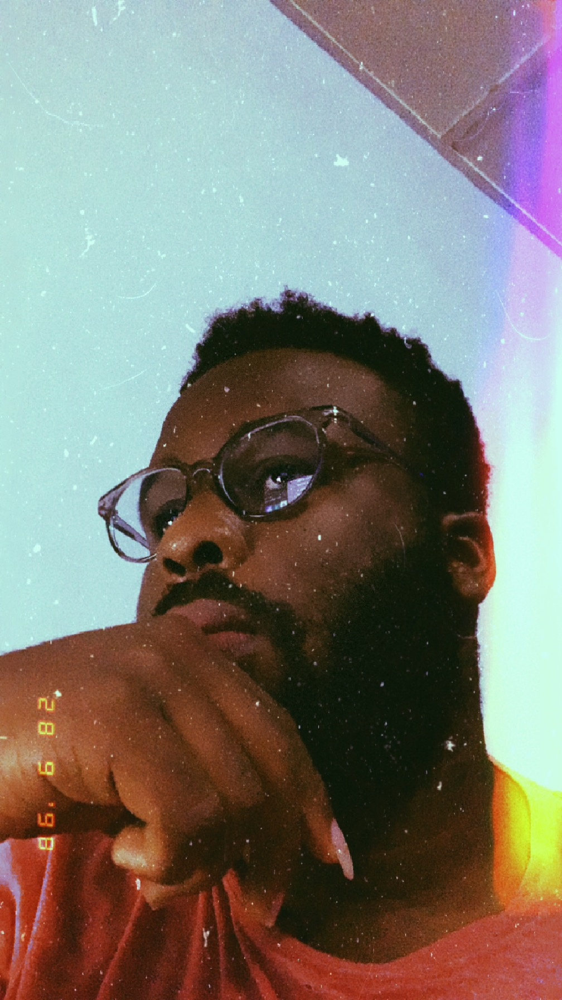

The Story of Daniel Ayomide Enwefah
Hello, I'm Daniel Ayomide Enwefah, and my AltSchool ID is ALT/SOE/023/3328. I pursued my passion for technology by studying computer science at Caleb University, graduating in 2020. Computers have always fascinated me; understanding how they work and using them to solve real-world problems has been a lifelong ambition. In today's world, technology is a driving force for positive change, and I'm eager to be a part of that transformation.
I chose AltSchool to hone my skills as a software engineer, aspiring to make a tangible impact on my environment. As an AltSchool student, I have three primary goals:
- I aim to become one of the best software engineers globally, continually pushing the boundaries of what's possible in the digital realm.
- Like anyone, I'm keen on increasing my income, but more importantly, I see it as a measure of the value I can bring to the tech industry and society at large.
- My ultimate aspiration is to create software and web applications that simplify life for everyone.
During my time at AltSchool, I look forward to achieving the following milestones:
- The satisfaction of independently writing code and turning concepts into reality will be a testament to my dedication and persistence.
- I'm excited about the prospect of developing an app that connects skilled individuals from any corner of the globe, transcending geographical boundaries.
I'm driven by the belief that technology can bridge gaps and enhance lives. With AltSchool as my platform, I'm eager to contribute to this vision and I invite you to join me! If you're interested, you can sign up by clicking on this Link. Together, we can make strides in the world of technology and create positive change. Looking forward to having you on board!